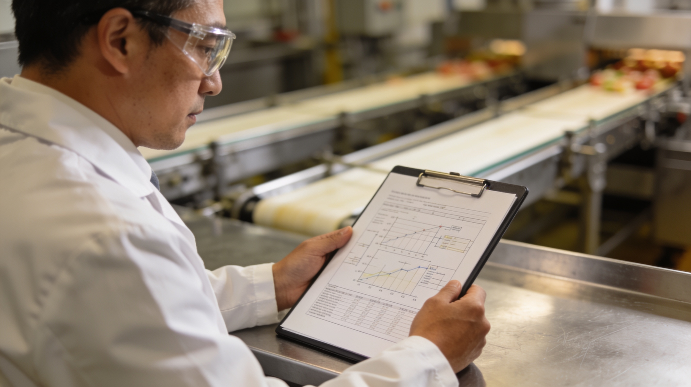

Del análisis HACCP al diseño 3D de tu planta antes de mover un solo ladrillo. Más de 15 años asegurando calidad e inversiones en la industria alimentaria peruana.
Tu inversión protegida, tu calidad asegurada.
Desde la certificación internacional hasta el diseño 3D de tu planta antes de construir. Toca un servicio para ver el detalle.

Implementación y certificación de estándares internacionales: HACCP, BPM, ISO 22000, BRCGS.

Tramitología sanitaria ejecutiva — gestión ágil de registros, habilitaciones y autorizaciones.

Migración inteligente de registros BPM y HACCP del papel a la nube. Acceso 24/7 desde cualquier dispositivo.
Evaluaciones diagnósticas GAP + programas de formación in-company para operarios y mandos medios.

Visualiza el layout completo de tu planta en 3D antes de mover un solo ladrillo. Evita rediseños costosos y llega a la habilitación sanitaria aprobado desde el primer intento.
Food Tracking Perú es la única consultoría en el Perú que integra certificación internacional, transformación digital y diseño 3D de plantas en un solo equipo especializado.
Ingeniero especializado en inocuidad alimentaria y diseño de plantas industriales, con más de 15 años asesorando a empresas procesadoras, exportadoras y cadenas de food service en Lima y todo el Perú. Ha liderado implementaciones de HACCP, ISO 22000 y BRCGS para empresas que exportan a Europa, EE.UU. y Asia. Pionero en el Perú en el diseño 3D de plantas alimentarias HACCP-ready con SketchUp Pro antes de la construcción, una metodología que permite visualizar flujos, distribuciones y zonas de trabajo antes de mover el primer ladrillo.
Documentación lista para auditoría, respaldada por ingenieros especializados en la industria alimentaria peruana.
Llevamos tu sistema del papel a la nube, auditable las 24 horas y accesible desde cualquier dispositivo.
Diseñamos y visualizamos tu planta en 3D para que inviertas con certeza y evites rediseños costosos después de construir.
Somos la única consultoría en el Perú que diseña plantas alimentarias en 3D, permitiéndote ver el layout completo de tu instalación antes de que comience la construcción.
Antes de mover un solo ladrillo, tú y tu equipo ya pueden ver cómo quedará distribuida la planta, los flujos de proceso y cada zona de trabajo conforme a los requisitos HACCP. Eso evita rediseños costosos después de construida.
Depende del tamaño y complejidad de la empresa. En promedio, una implementación completa de HACCP (documentación, capacitación y validación) toma entre 6 y 12 semanas. Si ya cuentas con documentación previa, el proceso puede ser más rápido. El diagnóstico inicial gratuito nos permite darte un cronograma realista desde el primer día.
El costo depende del tamaño de la empresa, el número de productos y el nivel de documentación previa. Para darte un precio exacto necesitamos hacer el diagnóstico inicial (gratuito) primero. Lo que sí podemos decirte es que implementar HACCP cuesta significativamente menos que una auditoría fallida, multas sanitarias o la pérdida de un contrato con una cadena de supermercados por incumplimiento normativo.
Sí. Atendemos empresas en todo el Perú: Lima, Callao y provincias. Para proyectos fuera de Lima coordinamos visitas técnicas según el cronograma del proyecto y complementamos el trabajo presencial con reuniones virtuales para optimizar tiempos y costos de desplazamiento.
Somos la única consultoría en el Perú que integra tres capacidades en un solo equipo: (1) implementación de sistemas de gestión de inocuidad listos para auditoría, (2) transformación digital del sistema de calidad, y (3) diseño 3D de plantas alimentarias antes de construir. Este tercer punto es nuestro diferenciador más único: no existe un servicio equivalente en el mercado peruano.
Sí. Según el Codex Alimentarius y la normativa peruana (DS 007-98-SA y sus modificatorias), las empresas que fabrican alimentos deben implementar sistemas de control de peligros basados en HACCP, independientemente de su tamaño. Además, si vendes a supermercados o grandes cadenas, el HACCP es prácticamente un requisito obligatorio. Adaptamos el sistema al tamaño y complejidad real de tu operación.
Sí. Trabajamos tanto con empresas en etapa de diseño de planta (antes de construir) como con empresas ya operativas que necesitan regularizar o certificar su sistema. Para startups del sector alimentos, la ventaja de trabajar con nosotros desde el inicio es que el diseño de la planta ya sale HACCP-ready, evitando costosas modificaciones después de la construcción.
El diagnóstico inicial sin costo incluye una revisión del estado actual de tu sistema de gestión de inocuidad, identificación de brechas respecto a la normativa aplicable, y una propuesta de ruta para alcanzar tus objetivos de certificación o regularización. Es una sesión de 30 a 45 minutos por videollamada o presencial en Lima.
30–45 minutos por videollamada o presencial en Lima. Te decimos exactamente qué necesitas para certificarte o diseñar tu planta. Sin compromiso.